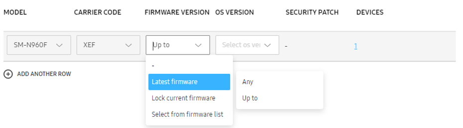
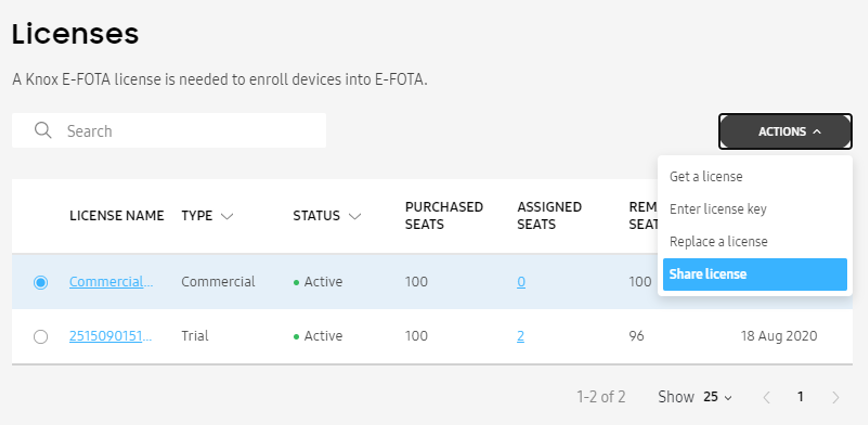
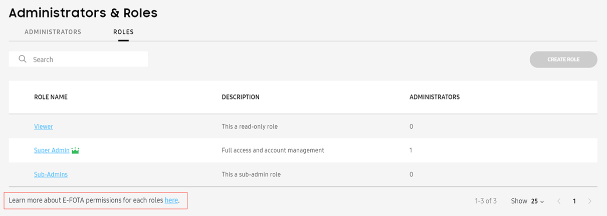
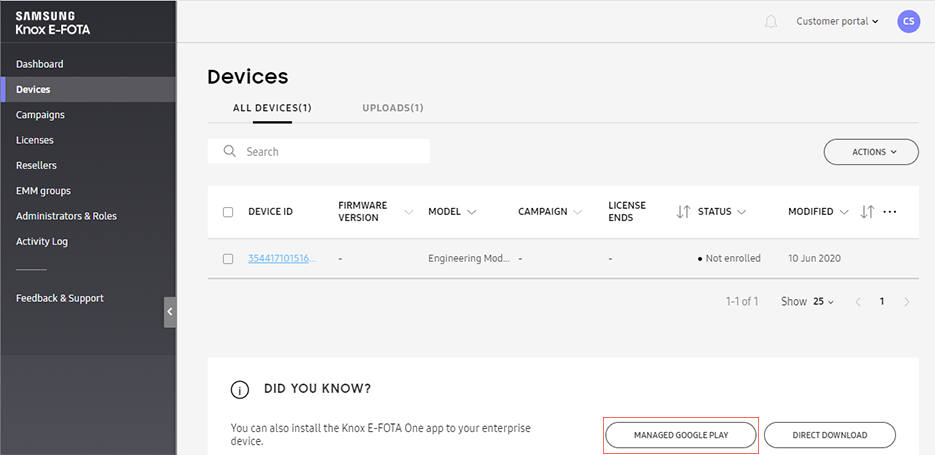

Knox E-FOTA 1.32 release notes
Last updated July 26th, 2023
For a full list of all features, visit the product page for Knox E-FOTA.
Support for additional EMMs
Support has been added for the Blackberry and SOTI EMMs. You can now connect to Blackberry or SOTI through your Knox E-FOTA admin portal, select device groups to add, and perform operations on those devices.
Support for Blackberry
You can now add user groups from Blackberry. In Knox E-FOTA, these groups are treated as groups of devices, not groups of users.
For information on how to get started on connecting Knox E-FOTA to Blackberry, see Prerequisites for connecting to Blackberry.
Adding shared device groups from Blackberry is not supported at this time.
Support for SOTI
You can now add device groups from SOTI.
In SOTI, device groups can be arranged in hierarchies. That is, a device can belong to a group, and that group can in turn have a parent group. When you add a device from SOTI to Knox E-FOTA, you only get information about the device group that device directly belongs to.
For information on how to get started on connecting Knox E-FOTA to SOTI, see Prerequisites for connecting to SOTI.
Adding virtual device groups from SOTI is not supported at this time.
Automatically pushing the latest firmware version of a particular OS
To prevent security vulnerabilities, you can now configure a campaign such that it automatically pushes the latest firmware version of a particular OS to the assigned devices.
When choosing the latest firmware, you can specify:
-
Any — The latest firmware, regardless of its OS version, will be pushed to devices.
-
Up to — The latest firmware, within a particular OS version, will be pushed to devices.
If you select this, you may not receive security patches included in the latest firmware of the latest OS version.
If no firmware that meets your criteria is available for devices of a particular model-carrier pair, an error is displayed. In this case, you can lock the devices to their current firmware version.

Monitoring active campaigns through the Dashboard
You can now check the operation status of active campaigns through the Dashboard. This allows you to easily get an overall view of how your campaigns are operating.
When a campaign goes into Active state, a widget for it is automatically added to the Dashboard. You can hide that widget by clicking the X icon on it. You can also manually re-pin it to your Dashboard, as long as it’s still in Active state.
What data is provided regarding the active campaign?
For each active campaign, the widget has two views.
-
The Status view shows the following:
-
Success rate
-
Successful — Count of devices that were successfully processed. This also includes devices that were not updated because they have a higher version than the target firmware.
-
Attention — Count of devices that require your attention. That is, the update failed on these devices or triggered an error. When you click this, the Devices list is displayed, filtered to show the devices that need your action.
-
In-progress — Count of devices that have yet to download or install updates.
The Status view is updated in real time.
-
-
The Trend view shows the success rate of the campaign over time. This view is updated once a day.
Campaigns that were activated before this release will not have the trend view.
Sharing a commercial license key between US and EU tenants
A super admin can now use the same commercial license in two tenants — one US tenant and one EU tenant. This is helpful if they’re syncing US and EU devices from Knox Manage to Knox E-FOTA. The US devices will be registered in the US tenant, and the EU devices will be registered in the EU tenant. That license key (registered in both tenants) can then be used to enroll the devices synced from the EMM.
A license key can only be shared between 1 US tenant and 1 EU tenant.

Preventing accidental unenrollment when syncing from an EMM
Previously, if you had a device that was enrolled in Knox E-FOTA and you subsequently added a device group from your EMM that also contained that device, that device would lose its current status; it would get the initial status of the newly added group: Synced.
The following policies have been added to avoid situations like this.
-
When you add a device to Knox E-FOTA and then subsequently add its device group from an EMM to Knox E-FOTA, that device will keep its current status until the EMM group’s initial status changes from Synced to something else.
Example: You enrolled Device A to Knox E-FOTA and assigned it to Campaign A. On the EMM side, Device A is also a member of Group 1. When you add Group 1 to Knox E-FOTA, it will get the status Synced. Device A, however, will retain its Assigned status.
-
When an EMM group’s status changes from the initial Synced status into something else, all its members will follow the new status.
Example: Continuing the example above — if you assign Group 1 to Campaign B, all its members, including Device A, will also be assigned to Campaign B.
-
If an EMM group is explicitly unenrolled, all its members will also be unenrolled.
Example: Continuing the example above — if you unenroll Group 1, all its members, including Device A, will also be unenrolled.
-
When you add a device to Knox E-FOTA and then subsequently add its device groups (multiple groups) from an EMM to Knox E-FOTA, the device will follow the policy of the group with the higher priority. Group priority is set in Knox E-FOTA.
Example: You enrolled Device A to Knox E-FOTA and assigned it to Campaign A. On the EMM side, Device A is also a member of Group 1 and Group 2. When you add Group 1 and Group 2 to Knox E-FOTA, they will both get the initial status, Synced. Device A, however, will retain its Assigned status (following the first policy above).
In this example, Group 1 has a higher priority than Group 2, so Device A will follow Group 1’s policy. If you enroll Group 2 and assign it to Campaign B, this change will not affect Device A. Since Group 1 is still in its initial Synced status, Device A will continue to retain its Assigned status.
When you enroll Group 1 and assign it to Campaign C, Device A will also be assigned to Campaign C (following the second policy above).
Change in number of seats in the Knox E-FOTA trial license
Starting this release, the number of seats that come with a Knox E-FOTA trial license will change from 100 to 30.
The trial keys of all Knox Cloud Services will have 30 seats for 3 months.
Improvement in firmware download speed
Firmware updates are now served through a content delivery network (CDN). This results in faster download speeds.
Firmware notification emails temporarily stopped
Knox E-FOTA has temporarily stopped sending firmware notification emails. We will enhance this feature and add it back at a later date.
Client improvement
An improvement was made in the way the Knox E-FOTA client app manages downloads of firmware updates.
UX improvements
The following enhancements to the user interface were made.
Devices with expired licenses
The following enhancements were made for devices with an expired license:
-
If an enrolled device’s license expires, the device remains in Enrolled state. However, no campaign can be assigned to it.
An icon and a tooltip will be visible explaining why the device cannot be enrolled.
-
If a device is in Enrollment pending state and its license expires, the device’s status changes to Failed to enroll. An error is logged for this event.
Permission exceptions
When you attempt to perform an action that you don’t have permission to perform, the admin portal will now display a clearly worded error message explaining that you don’t have permission to perform that action.
Administrators & Roles
In Administrators & Roles > Roles, a link to the Knox E-FOTA admin guide has been added. The page being referenced includes information on each role and its corresponding permissions.

Link to Knox E-FOTA page on managed Google Play
To facilitate the deployment of the Knox E-FOTA app to devices through managed Google Play, the following button has been added in Devices > All Devices.

Clicking this button opens a page with a link to the Knox E-FOTA page in managed Google Play.
On this page
Is this page helpful?